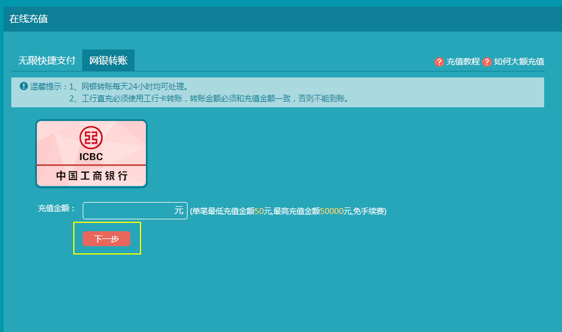
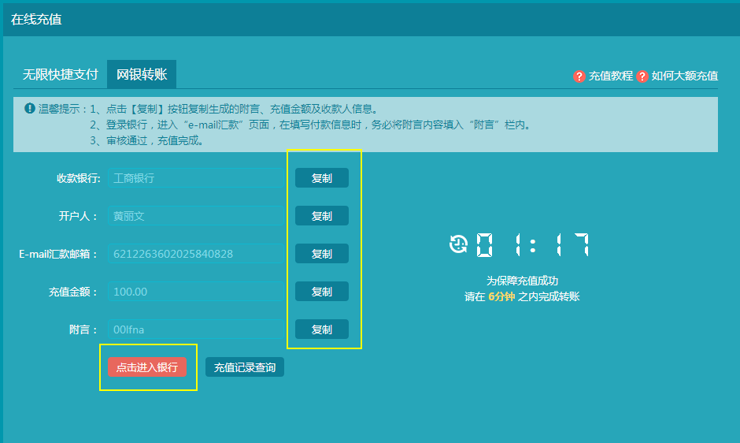
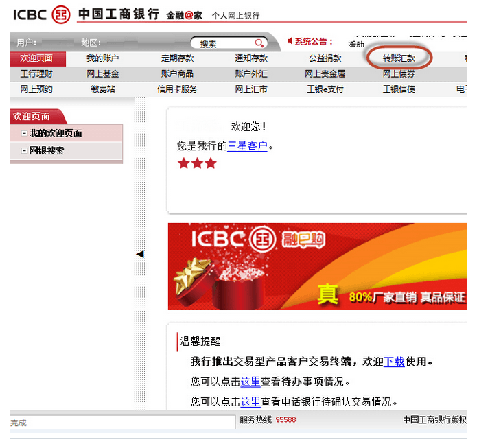
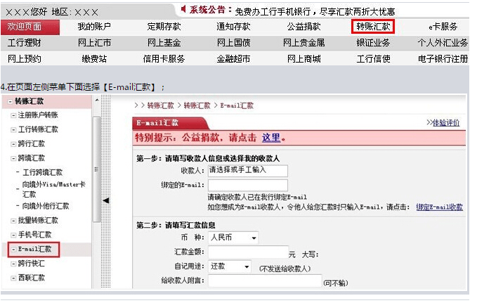
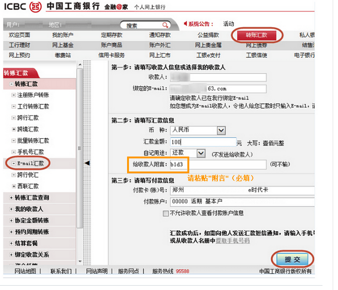
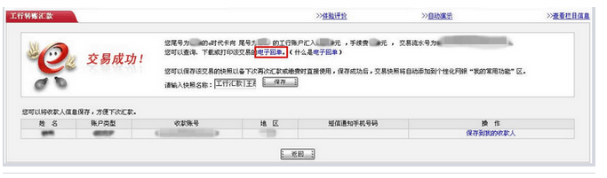
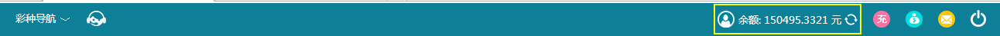

第一步：点击首页<资金管理>按钮， 选<在线充值> 里面的<网银转账>输入金额， 点击<下一步> [如图说明红色标注处]

第二步：获取充值信息 [如图说明红色标注处]

第三步：点击<登录网上银行付款>， 进入工行银行点击<转账汇款>

第四步：点击页面左侧的“E-mail汇款”

第五步：使用复制功能，在网银对应栏内粘贴【收款人姓名】、 【收款E-mail地址】、【附言】 等必填信息（注：请复制申请充值信息的【附言】， 粘贴入网银页面<给收款人附言>一栏)

第六步：点击【提交】提示交易成功

第七步：进入平台首页，查看游戏币到账情况
